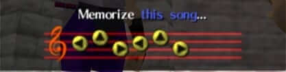

Le quiz « légendaire » de la série
The Legend of Zelda
icone pouch
Quel est le nom de cette mélodie ?

A. La berceuse de Zelda
B. Le chant de Saria
C. Le Chant du temps
Quels sont les noms des trois divinités qui ont créé le Triforce ?
A. Zelda, Sheik, Impa
B. Zelda, Link, Ganon
C. Saria, Ruto, Nabooru
C. Din, Nayru, Farore
Quel est le nom de ce personnage ?
A. Ooccoo
B. Cucco
C. Oocca
C. Aucunes de ces réponses
Valider mes choix
Ajouter la section resultat en TS.